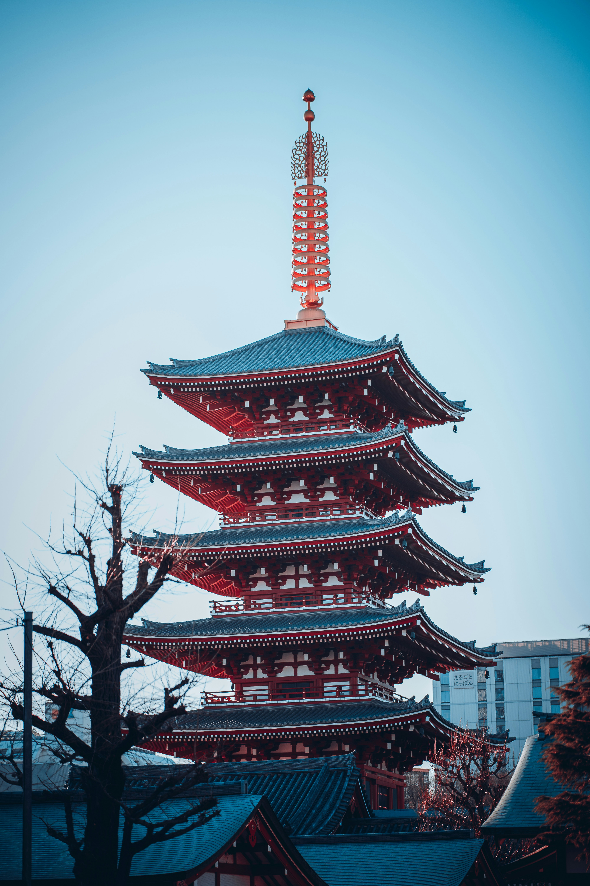
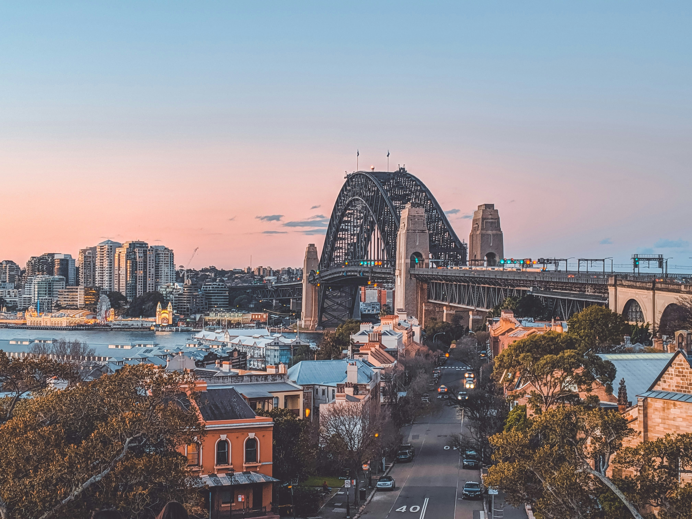
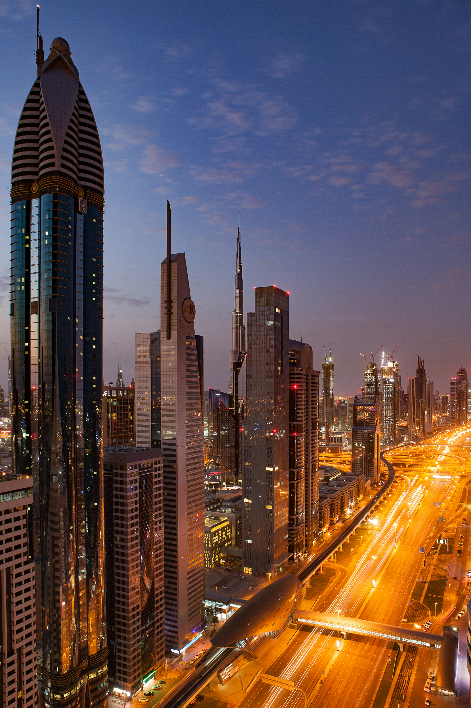
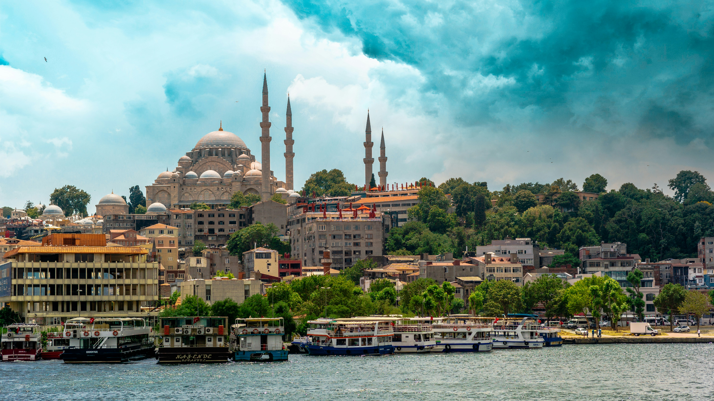
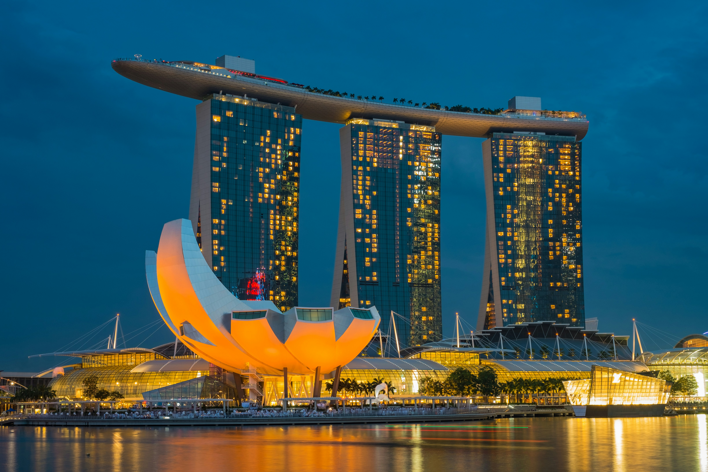

| Destination | Image | Description |
|---|---|---|
| Paris, France |  |
Paris, the City of Light, is renowned for its rich history, romantic charm, and world-class cuisine. Visitors can admire the Eiffel Tower, stroll along the Seine, or explore the Louvre’s art treasures. The city’s streets are filled with cozy cafés, elegant fashion boutiques, and lively markets that make Paris unforgettable. |
| Tokyo, Japan |  | Tokyo blends cutting-edge technology with centuries-old traditions. From historic temples and peaceful gardens to futuristic skyscrapers and neon-lit districts, the city offers endless experiences. Food lovers flock to its sushi restaurants and bustling markets, while fashion enthusiasts explore Harajuku and Shibuya. |
| New York City, USA |  |
Known as "The Big Apple," New York City is a global hub for culture, art, and business. Landmarks such as Times Square, the Statue of Liberty, and Central Park attract millions of visitors each year. The city’s vibrant energy, iconic skyline, and endless attractions make it a must-see destination. |
| Rome, Italy |  |
Rome, the Eternal City, offers travelers a journey back in time with its ancient ruins, grand piazzas, and rich culture. The Colosseum, Roman Forum, and Pantheon showcase its historic grandeur. Visitors can enjoy authentic Italian cuisine while wandering through charming cobblestone streets. |
| Cape Town, South Africa |  |
Cape Town lies between majestic Table Mountain and the Atlantic Ocean. It’s famous for its natural beauty, vibrant markets, and cultural diversity. Tourists can hike the mountain, relax at Camps Bay Beach, or visit the Cape of Good Hope for breathtaking views. |
| Sydney, Australia |  | Sydney is a dynamic city that combines modern architecture with stunning natural scenery. The Opera House and Harbour Bridge are global icons, while Bondi Beach attracts surfers and sunbathers. The city also offers a lively food culture and outdoor adventures. |
| London, England |  |
London is a city where history meets modern life. From Buckingham Palace and the Tower of London to modern landmarks like The Shard, the city offers endless sights. It’s also home to West End theatres, iconic double-decker buses, and world-class museums. |
| Dubai, UAE |  | Dubai dazzles visitors with its futuristic skyline, luxurious shopping, and desert adventures. The Burj Khalifa, the world’s tallest building, dominates the cityscape. Visitors can also explore traditional souks, man-made islands, and golden sand dunes. |
| Barcelona, Spain |  |
Barcelona is known for its unique architecture, vibrant street life, and Mediterranean beaches. Antoni Gaudí’s masterpieces, like the Sagrada Família and Park Güell, define the city’s skyline. Tapas bars, lively markets, and beachside promenades make it a favorite European destination. |
| Istanbul, Turkey |  | Istanbul is where East meets West, blending European and Asian cultures across the Bosphorus. Iconic landmarks include Hagia Sophia, the Blue Mosque, and the Grand Bazaar. Its rich history, delicious cuisine, and lively neighborhoods make it unforgettable. |
| Cairo, Egypt |  |
Cairo, the bustling capital of Egypt, is famous for its proximity to the Pyramids of Giza and the Sphinx. The city’s lively streets are filled with markets, mosques, and ancient treasures. Visitors can experience both modern life and ancient wonders. |
| Rio de Janeiro, Brazil |  |
Rio is known for its stunning beaches, lively Carnival festival, and Christ the Redeemer statue. Sugarloaf Mountain provides breathtaking views of the city. Samba music, colorful neighborhoods, and tropical weather add to Rio’s charm. |
| Bangkok, Thailand |  |
Bangkok offers a mix of ornate temples, bustling street markets, and vibrant nightlife. The Grand Palace and Wat Arun are architectural wonders. Street food stalls line the streets, offering delicious Thai flavors at every corner. |
| Singapore |  | Singapore is a futuristic city-state known for its cleanliness, green spaces, and stunning skyline. Gardens by the Bay, Marina Bay Sands, and Sentosa Island are top attractions. Its diverse food culture and safe environment make it a popular destination. |
| Venice, Italy |  |
Venice, built on canals, is one of the most romantic cities in the world. Visitors can ride gondolas through winding waterways and admire historic architecture. St. Mark’s Basilica and the Rialto Bridge highlight its timeless charm. |